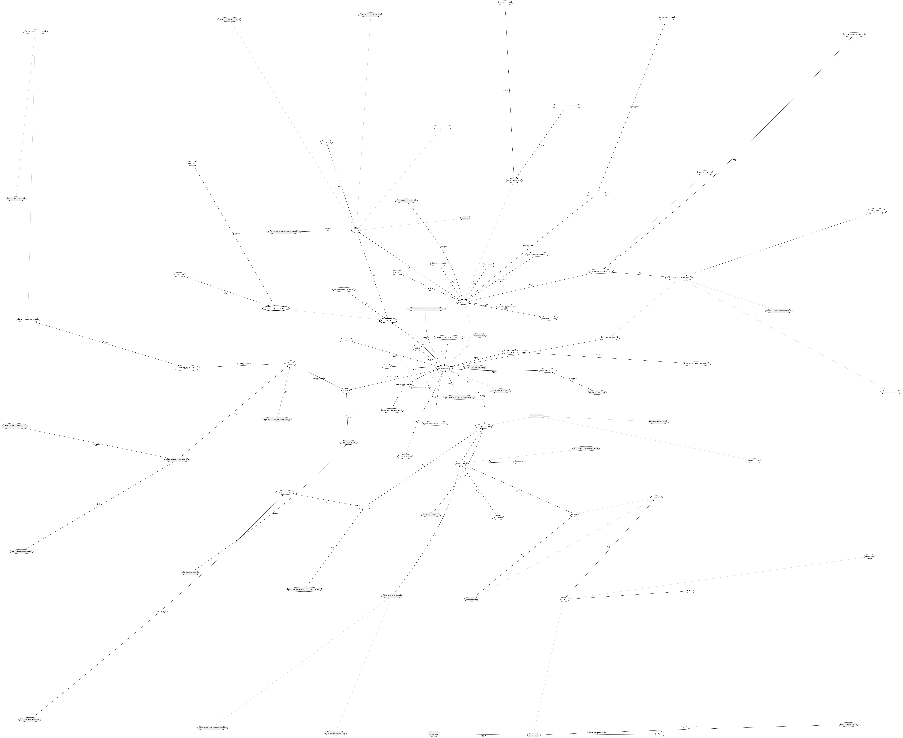

There is also a dot Version available, if you like that better.

This graph ist made with neato. You can download the .dot file here. The sqlite database from which it is generated can be found here.
CC-BY-SA Adrian Neumann (PGP Key A210311B)
adriann.github.io